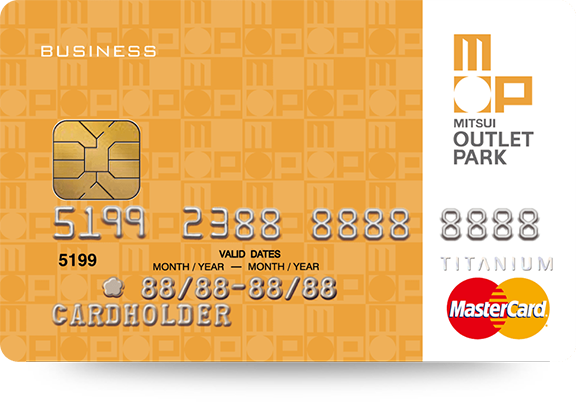

信用卡掛失
- 選擇卡片
- 再次確認
- 申請結果
|
美元雙幣信用卡 MasterCard 正卡：1 張 附卡：2 張 |
|

MUTSUI OUTLET PARK 卡 MasterCard 正卡：1 張 |
|
MeCard MasterCard 正卡：1 張 |
|
日圓雙幣信用卡 MasterCard 正卡：1 張 附卡：1 張 |
|
注意事項
|
謹慎理財 信用至上
24小時服務專線：(02)2528-7776/0800-058-888 (限市話)
郵政信箱：100台北郵局39-88號信箱
循環信用利率年息2.74%~15% (基準日2015/8/3)，
預借現金手續費：預借現金金額X3.5%+NT$100